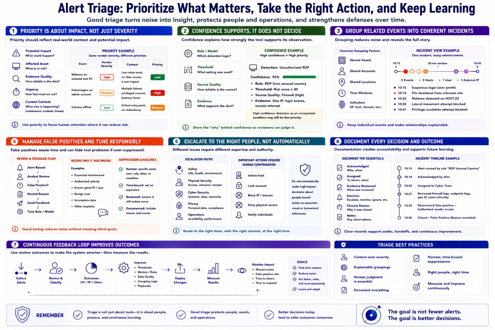

Alert Triage and Event Review
Connecting to LMS... Progress: in progress

Narration
Alert triage is the process of reviewing new events, determining priority, and deciding what action is needed. Priority should reflect potential impact, affected asset, evidence quality, urgency, and current context rather than simply repeating a vendor severity label.
Confidence describes how strongly a tool supports its observation; it does not prove the event is important or correct. Show confidence with the rule, model, threshold, source quality, and relevant evidence. A high-confidence detection on an unimportant condition may still be low priority.
Group related events so a reviewer sees one coherent incident instead of dozens of isolated alerts. Shared assets, accounts, locations, time windows, or indicators can support grouping. Preserve individual evidence and make automated relationships explainable.
False positives are alerts that incorrectly identify a problem or meaningful event. Reviewers need a clear way to mark them, record why they were wrong, and route that feedback to rule or model owners. Suppression should be narrow and time-bound so tuning does not create an unnoticed blind spot.
Escalation paths should identify who handles safety, physical security, cyber, privacy, or operational issues. Important actions should require appropriate human confirmation. The dashboard should not automatically make high-impact decisions about people solely from uncertain visual or behavioral inferences.
Document acknowledgments, assignments, evidence reviewed, decisions, and closure reasons. This creates accountability and supports later learning. A mature feedback loop uses review outcomes to improve thresholds, source quality, grouping, and playbooks while monitoring whether changes increase missed events.